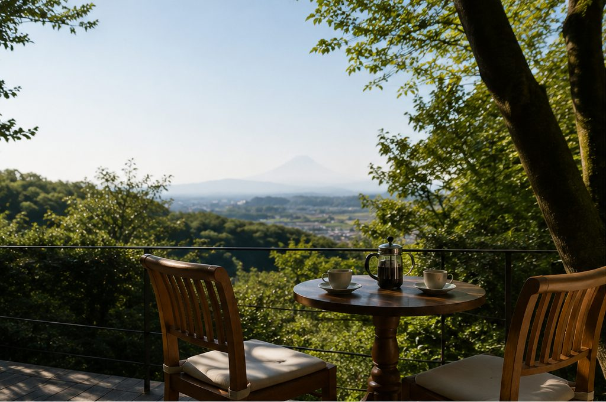
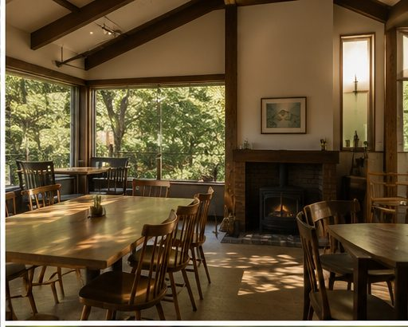
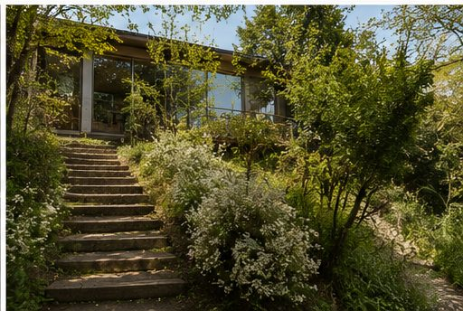
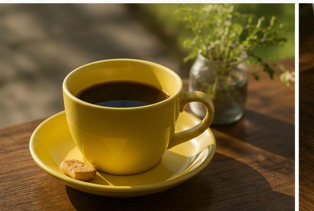
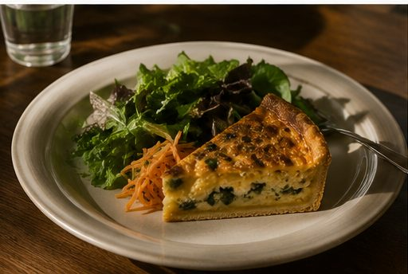
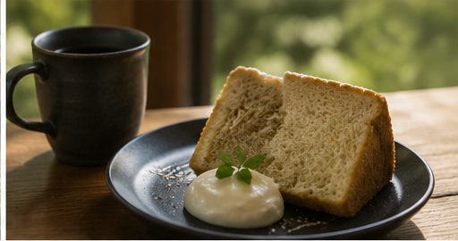

鎌倉・湘南深沢の住宅街に佇む、
緑と眺めを楽しめる週末カフェ。
緑に囲まれた落ち着いた空間と、景色を感じられるテラス。店内にはゆったりとした時間が流れ、読書や会話、一人での休憩にも心地よく過ごせます。

緑に包まれた落ち着いた空間。読書をしたり、会話を楽しんだり、日常から少し離れて深呼吸したくなるような時間を過ごせます。

大きな窓やテラスから自然を感じられる、開放感のあるカフェ。天気のよい日には、景色を眺めながらゆっくりとお茶や軽食を楽しめます。

静かで会話しやすい雰囲気があり、一人での読書や、友人・家族との穏やかな時間にも。観光地の賑わいから少し離れて過ごしたい方にもおすすめです。
しっかり食事をするというより、景色や会話と一緒にゆっくり味わうメニューです。

サラダを添えた、手作り感のある一皿。

ふんわりとした甘さ。コーヒーとともに。
フレンチトーストなどとご一緒に。
※メニュー内容は季節や仕入れにより変わる場合があります。
営業日は金・土・日が中心です。曜日により変更となる場合があるため、来店前の確認がおすすめです。
坂道や階段のあるエリアです。徒歩でお越しの方は、時間に余裕を持ってお越しください。
駐車場は台数に限りがあります。車での来店時は、事前のご確認がおすすめです。
天候や季節により快適さが変わります。あわせて店内のお席もご利用いただけます。
大きな窓から入る光、静かに流れる音楽、緑を抜ける風。急がずに過ごしたくなる空気のなかで、週末の余白をお楽しみください。
営業日や時間は変更となる場合があります。来店前のご確認がおすすめです。
Googleマップで見る